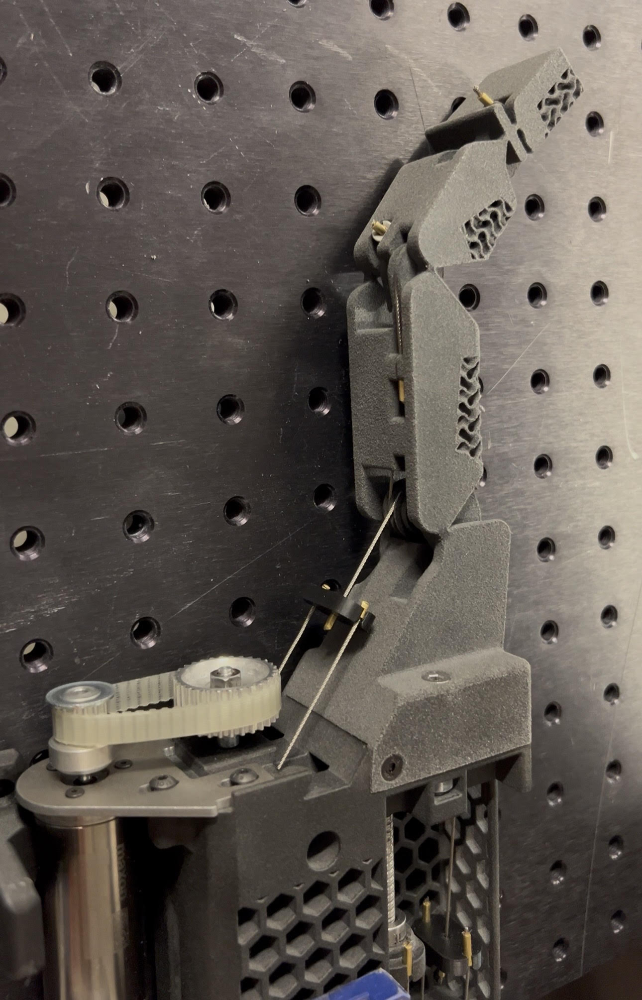

Maxime Demesy
Ingénieur R&D Mécatronique & Robotique
En dernière année d'ingénierie à l'ENSMM. Spécialisé en robotique parallèle, mécanismes compliants et prototypage avancé. Animé par la volonté de concevoir des systèmes mécaniques intelligents, fiables et élégants pour des secteurs d'excellence (Médical, Aérospatial, Robotique de pointe).
Projets d'Ingénierie

Robot Parallèle Reconfigurable & Gripper Bistable
Le Challenge
Développer de A à Z un robot parallèle (4-DOF) à architecture reconfigurable intégrant un effecteur capable de s'adapter à n'importe quelle forme d'objet via un pilotage purement mécanique.
La Solution
- Modélisation Mathématique : Analyse cinématique, singularités et dynamique du système, validées par un jumeau numérique sous MATLAB/Simscape.
- Innovation Mécanique : Conception d'une pince monobloc intégrant un mécanisme bistable "cam-follower" (type stylo) pour une double action (verrouillage/déverrouillage en butée Z).
- Soft-Robotic : Mors équipés de la technologie Fin Ray, se déformant pour épouser les objets complexes sans capteurs de force.
Résultat
Un prototype fonctionnel imprimé en 3D (Poudre MJF), validant l'intégration de la compliance pour des opérations de Pick & Place avancées.

Préhenseur TraceBot & Mécanismes Compliants
Le Challenge
Dans le cadre du projet européen TraceBot, reconcevoir un doigt robotique actionné par câble pour réduire son inertie, simplifier son assemblage et conserver une "transparence mécanique" parfaite (10N de force).
La Solution
- Suppression des pivots : Remplacement des articulations mécaniques par des "compliant mechanisms" imprimés en TPU, assurant le rappel élastique naturel.
- Structure Gyroïde : Intégration d'un treillis mathématique (gyroïde) isotrope dans la masse pour optimiser le grip et permettre une déformation homogène sur les objets saisis.
- Banc d'essai sur-mesure : Conception matérielle et logicielle (Arduino/C++) d'un banc de test dynamique.
Résultat
Une articulation compliante validée expérimentalement à plus de 100 000 cycles de flexion, avec une architecture drastiquement épurée.

Smart Gripper & Fiabilisation Robotique
Le Challenge
Sur une ligne de production automobile à haute cadence, un bras robotisé 6 axes souffrait d'un fort taux d'échec lors du clippage d'agrafes plastiques. Objectif : éradiquer les défauts sans arrêter la production.
La Solution
- Redesign Mécanique : Usinage d'un nouveau doigt monobloc en acier intégrant un chanfrein d'absorption d'erreurs de positionnement (tolérance +/- 1mm).
- Preuve de Concept (IoT) : Remplacement des systèmes de vision coûteux par une analyse dynamique embarquée. Développement d'un module Wi-Fi (Arduino, MPU-6050) fixé sur le bras.
- Traitement du signal : Détection fiable du "clic" mécanique de l'agrafe via l'isolation d'un pic d'accélération spécifique.
Résultat
Chute drastique des erreurs de placement. Récompensé par le prix de "L'Idée d'Amélioration du Mois" par la direction de l'usine.
Profil & Éducation
Diplôme & Expertise
SUPMICROTECH - ENSMM
Diplôme d'Ingénieur (Grade Master) - 2026
Spécialisation CROC (Conception de Robots et Objets Connectés).
- Conception & Simulation (CATIA V5, SolidWorks, PTC Creo, ANSYS)
- Prototypage Rapide (SLA, SLS, MJF, Poudre, Découpe Laser)
- Systèmes Embarqués (C/C++, Arduino, STM32)
Au-delà de l'ingénierie
- Maker Spirit : Modélisation 3D personnelle et robotique Open-Source. Toujours à la recherche d'une solution élégante à un problème complexe.
- Arts Martiaux : Pratique rigoureuse des sports de combat, forgeant la discipline, la résilience et la gestion de la pression.